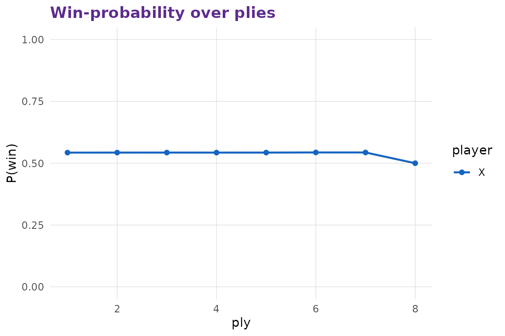
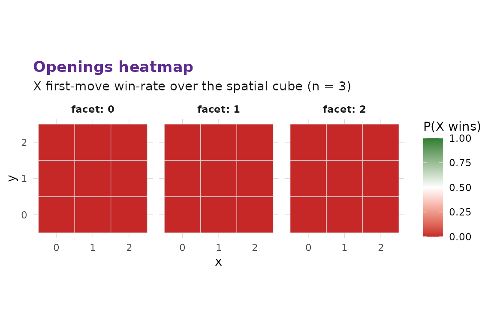

Self-play, simulation, and the §12 timeline-win finding
Source:vignettes/simulation.Rmd
simulation.RmdPolicies
A policy is a parameterised picker function over Stack B’s searchers.
mxo_policy("random")
#>
#> ── multixoR policy ─────────────────────────────────────────────────────────────
#> ℹ Type: random
mxo_policy("heuristic", branch_policy = "none")
#>
#> ── multixoR policy ─────────────────────────────────────────────────────────────
#> ℹ Type: heuristic
#> ℹ Params:
#> → branch_policy = noneSingle self-play game
mxo_self_play() returns an mxo_game_record
that includes the per-ply heuristic score and the heuristic win
probability (X perspective). Those two columns are exactly what the
win-probability curve consumes.
rec <- mxo_self_play(
mxo_policy("random"), mxo_policy("random"),
config = mxo_config_default(n = 3L, k = 3L, ply_cap = 8L),
seed = 1L
)
rec
#>
#> ── multixoR game record ────────────────────────────────────────────────────────
#> ℹ Outcome: draw (winner: NA)
#> ℹ Plies: 8; timelines: 3
#> ℹ Win axis: NA
head(as_tibble.mxo_game_record(rec), 6L)
#> # A tibble: 6 × 9
#> ply player kind L_src t_src idx L_new eval win_prob
#> <int> <int> <chr> <int> <int> <int> <int> <dbl> <dbl>
#> 1 1 1 present 0 0 24 NA 14 0.543
#> 2 2 2 present 0 1 3 NA 78 0.543
#> 3 3 1 branch 0 0 13 1 104 0.543
#> 4 4 2 present 0 2 0 NA 52 0.543
#> 5 5 1 present 1 0 9 NA 98 0.543
#> 6 6 2 present 1 1 20 NA 369 0.544
mxo_plot_win_prob(rec)
Batch simulation
mxo_simulate() runs many self-play games with
reproducible per-game sub-seeds. The summary surfaces the §12
stress-test number — the fraction of decisive games whose
winning line crosses timelines — the diagnostic the
orchestrator flagged as the rules’ main balance concern.
sim <- mxo_simulate(
mxo_policy("random", branch_policy = "all"),
mxo_policy("random", branch_policy = "all"),
n_games = 20L,
config = mxo_config_default(n = 3L, k = 3L, ply_cap = 8L),
seed = 7L, record_eval = FALSE, progress = FALSE
)
summary(sim)
#>
#> ── multixoR simulation summary ─────────────────────────────────────────────────
#> ℹ Games: 20
#> ℹ Win rates: X = 0; O = 0; draws = 1
#> ℹ Mean plies: 8; mean timelines: 4.7
#> ℹ Cross-timeline-win fraction: NAmxo_timeline_win_rate() returns the same number with a
per-axis-class breakdown.
mxo_timeline_win_rate(
mxo_policy("random"), mxo_policy("random"),
n_games = 20L,
config = mxo_config_default(n = 3L, k = 3L, ply_cap = 8L),
seed = 7L
)
#> # A tibble: 1 × 8
#> n_games n_wins cross_timeline_wins cross_timeline_fraction spatial time
#> <int> <int> <int> <dbl> <int> <int>
#> 1 20 0 0 NA 0 0
#> # ℹ 2 more variables: timeline <int>, mixed <int>Openings heatmap
mxo_opening_table() plays X’s first move from each
spatial cell against a fixed opponent. mxo_plot_opening()
renders the resulting win-rate heatmap as Z-slices.
tab <- mxo_opening_table(
opponent = mxo_policy("random"),
n_games_per_cell = 2L,
config = mxo_config_default(n = 3L, k = 3L, ply_cap = 6L),
seed = 1L
)
mxo_plot_opening(tab, n = 3L, d_spatial = 3L)
Calibration
mxo_make_calibration_data() +
mxo_fit_calibration() produce the mapping the engine’s
win-probability uses internally. The script that fits the package
default lives at data-raw/make_calibrator.R and ships the
result to R/sysdata.rda.